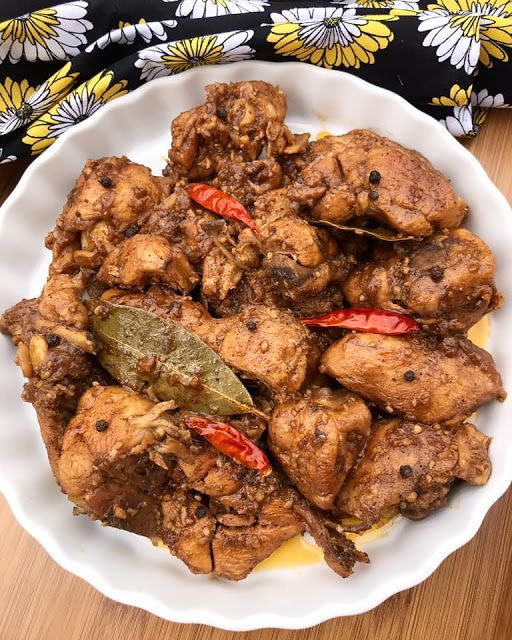

Chicken Adobo is a Filipino dish made by braising chicken legs (thighs and/or drumsticks) in a sauce made up
of vinegar, soy sauce, garlic, and black pepper. It's tangy, salty, garlicy, slightly sweet, and spicy. The
chicken is slowly simmered in the sauce making it flavorful and incredibly tender.
Ingredients (serving: good for 4 people)
- 6 pounds Chicken
- 3 tbsp Canola Oil
- 2.25 cups Soy Sauce
- 2.25 cups White Vinegar
- 24 gloves Garlic crushed
- 6pcs Chilies sliced
- 6 tbsp Brown Sugar
- 3 tsp ground Black pepper
- 6pcs Bay leaves
Steps for making Chiken Adobo
- Heat oil in a large skillet over med-high heat. Season chicken with salt and pepper. Add the chicken and
drumsticks skin side down to the pan and brown on both sides. Remove and place on a plate.
- To the skillet, add the vinegar, soy sauce, garlic, half the chilies, black pepper, sugar, and bay
leaves. Bring to a boil over med-high heat. Add the chicken, skin side up, reduce heat to low, cover,
and let simmer for 30-35 minutes until cooked through and tender.
- Remove chicken from pan onto a clean plate. Bring sauce to a boil over med-high heat and cook for about
5 minutes or until slightly thickened. (For a thicker sauce, mix together 1 ½ teaspoon cornstarch with 1
½ teaspoons cold water. Pour into the boiled sauce and cook another 20-30 seconds until thickened.)
- Remove the pan from the heat, discard bay leaves, and add the chicken back. Spoon sauce over the top of
the chicken and garnish with remaining chilies.
- Serve chicken and sauce over jasmine rice.